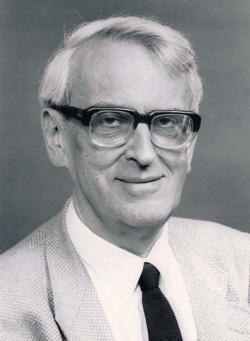

Photo copyright IOP Publishing
This page has:
David Phillips was an outstanding scientist, one of the founding fathers of structural biology and a wise influential figure in science and government. He was Founder President of the British Crystallographic Association (1982-1984) and the spread of the Association's activities mirrored David's career in crystallography. He started with work on intensity statistics, then moved to small molecule crystallography, followed by protein crystallography and instrument design. Protein crystallography led to proposals for structure/function relationships, homology modelling, fundamental understanding of thermal motion, and several protein molecules of pharmaceutical interest such as the immunoglobulin Fc fragment and beta-lactamase. However if is for his work with lysozyme that he will be most widely remembered. In 1966 he and the team, working at the Royal Institution in London, solved the first structure of an enzyme, lysozyme. From the structure it was immediately possible to put forward proposals for catalytic activity. The work opened the way to the explosion in the numbers of protein structures that are now being determined with modern technology and for the insights that these structures provide for the benefit of fundamental research, medicine and agriculture.
David was awarded a first class war-time degree in Physics, Mathematics and Electrical Communications (1942-1944; 1947-1948) at University College Cardiff. The degree course was interrupted (1944-1947) for service in the RNVR as a radar officer on HMS Illustrious, a fleet aircraft carrier. He remained at Cardiff for his Ph.D. and began work in crystallography under the supervision of A. J. C. Wilson, the instigator of the "Wilson" plot of the probability distribution (as a function of sin2phi/lambda2) of X-ray intensities. He made contributions to intensity probabilities, the reliability index and solved the structures of ephedrine hydrochloride, a component of anti-decongestant nasal drops, and acridine. After a post doctoral period at the National Research Laboratories, Ottawa (1951-1955) David was attracted home in 1956 to the Royal Institution of Great Britain in London by Sir Lawrence Bragg.
Bragg had recently retired from the Professorship of Physics at the Cavendish Laboratory Cambridge. There he had presided over the fundamental studies by John Kendrew on myoglobin and Max Perutz on haemoglobin, the first protein crystal structures to be solved by X-ray diffraction methods. Bragg was keen to set up a protein crystallography laboratory in London. Among those whom he attracted, in addition to David, were Colin Blake, Tony North and Roberto Poljak who came in late 1960 from the US bringing crystals of lysozyme. I joined the team in 1962. Realising that automating the collection of diffraction data was a prime objective for studies of large protein molecules, one of David's first tasks was to join Uli Arndt in the design and construction of an automated diffractometer. This instrument, adapted to make multiple simultaneous measurements of intensities, was to have profound consequences. With the linear diffractometer David and his team were able to achieve data of high accuracy that in turn led to precise structures. David had participated in the latter stages of work on myoglobin and in 1961 the linear diffractometer was used to extend the data of the myoglobin crystals to 1.4 Å resolution, a remarkable precision in those days.
Work on lysozyme started seriously in 1961, a time that David described as the spring of hope. The work proceeded with intense care in the measurement of intensities, their corrections for absorption, the preparation of heavy atom isomorphous derivatives and use of anomalous scattering. New data processing methods were developed by Tony North. The solution of the 2 Å resolution structure of lysozyme was achieved in 1965, a time for a dual celebration with Bragg's 75th birthday. The map was spectacularly clear. Knowledge of the amino acid sequence, which was not yet published, allowed a swift and definitive interpretation. The structure showed the complete path of the polypeptide chain (129 amino acid residues) folded into both alpha helices, that had previously been recognised in myoglobin, and beta sheet, a structure that had been predicted by Linus Pauling but not hitherto observed in three dimensions. The molecule was composed of 2 domains. Low-resolution (6Å) inhibitor binding studies, that had begun in 1964, showed that the catalytic site was located between these 2 domains.
The inhibitor binding studies were extended to 2 Å resolution by early 1966. Data collection was laborious; a data set took 14 crystals and required nearly 3 weeks. The most informative result was that obtained for the lysozyme-tri-N-acetylchitotriose complex. This led to a detailed interpretation of the lysozyme-inhibitor complex and the key elements of recognition at the catalytic site. The next step was to work out how lysozyme recognised its substrate, part of the polysaccharide component of the bacterial cell wall. It was known from the work of John Rupley that the trisaccharide was a very poor substrate but that catalytic efficiency increased with chain length up to the hexasaccharide. By molecular model building and by a series of logical arguments that brought to bear all the available biochemical evidence including that on the specificity for bacterial cell wall substrates with important contributions from Nathan Sharon, David was able to produce a proposal for the way in which a hexasaccharide substrate must bind. With Charles Vernon's insights into mechanisms of glycoside hydrolysis, it was possible to make proposals for the catalytic mechanism. This was the first time that structure had provided an explanation of how an enzyme speeded up a chemical reaction in terms of the structural constraints and physical chemical principles. The extrapolation from inhibitor binding to the substrate binding was a remarkable leap of deductive reasoning, achieved in three days. David described these three days as the most rewarding that he had ever spent. The mechanism was first presented at a Royal Society Discussion meeting held at the Royal Institution on February 3rd 1966 and published in the Proceedings of the Royal Society in 1967. Subsequently the proposed mechanism has been validated by a host of biochemical and structural experiments. For this work and his later achievements in protein crystallography David was awarded the Feldberg Prize, the CIBA Medal of the Biochemical Society, the Royal Medal of the Royal Society, the Charles Leopold Meyer Prize of the French Academy of Sciences, the Wolf prize, the Aminoff medal of the Royal Swedish Academy of Sciences and many honorary doctorates and fellowships.
Following Bragg's retirement in 1966, David was appointed Professor of Molecular Biophysics in Oxford University, a move funded by the Medical Research Council and promoted by Hans Krebs (then Professor of Biochemistry in Oxford), Dorothy Hodgkin and John Pringle (then Professor of Zoology). The Laboratory became part of the Zoology Department where John Pringle had a vision of Zoology that ran all the way from molecular structures to populations. In Oxford there were new achievements in protein structures. In an article published in Scientific American (1966), Phillips showed how knowledge of the lysozyme structure could predict possible folding pathways that the protein might adopt as it was being synthesised on the ribosome. In 1979 with Peter Artymiuk, Colin Blake and Michael Sternberg the correlation of dynamic properties of lysozyme were reported, an early example that showed that temperature factors in proteins were more than simply fudge factors. In another first early example, he, Tony North and Wyn Browne used homology modelling to show how a protein distantly related in amino acid sequence (a-lactalbumin) might adopt the same structure as lysozyme. With graduate students (Anne Bloomer, David Banner, Greg Petsko and Ian Wilson) he solved the structure of glycolytic enzyme, triose phosphate isomerase. This was the first example of an 8-fold alpha/beta barrel protein, a fold that is now recognised as the most common fold. He used to say that he felt his scientific contributions in later years were as an enabler allowing others to flourish. One of the happy outcomes of this role was the foundation of the Oxford Enzyme Group in 1968, an association of scientists from many different Departments in Oxford that met regularly (in the early years with a privately financed dinner) and promoted interdisciplinary research. The Oxford Enzyme Group was the fore-runner of the present day Oxford Centre for Molecular Sciences.
David was elected to the Royal Society in 1967. From about the mid-70s he began his second career as an influential figure in the administration of science. From 1976-1983 he was Biological Secretary and Vice President at the Royal Society and during this time was instrumental in introducing the Royal Society University Research Fellowships, a scheme that has done much to promote the independent careers of gifted individuals. In his 1991 Bernal lecture at Birkbeck College, David put forward his view that scientific research must be organised so that "combined with the provision of the necessary infrastructure, it can release individual scientists to display their critically important gifts of spontaneity and originality". These were his goals when from 1983-1993 he was Chairman (first part-time and then full-time) of the Advisory Board for the Research Councils (ABRC), the then intermediary body between government and the research councils set up to "advise the Secretary of State on the resource needs of the Research Councils, the Royal Society and the Fellowship of Engineering". He also served as member on the Advisory Council for Science and Technology (ACOST) and other Advisory Councils. His skills in committee were characterised by honesty, considerable oratory and a gift for friendships. It is said that politicians were much in awe of him and were fearful of making some scientific mistake. He made a special plea for openness in the decision making process and in the decisions taken.
His time at ABRC was not without controversy. On the one hand he needed to satisfy the increasing demands for funding from scientists faced with the continuing growth of scientific opportunities, the increasing need for more and more complex apparatus and facilities (often achievable only through international collaboration); the growing importance of interdisciplinary science, and the need for a variety of different organisations within which research can be conducted most effectively. On the other hand he fought to persuade Government to deliver more money but recognising the necessarily limited resources and pressures for concentration. He won the respect of both sides, emphasising that only the best science should be funded, although some of his views on choices, selectivity and priorities, were not generally accepted. As recounted to Max Blythe at the Oxford Centre for Twentieth Century Medical Biography, he was once reprimanded by the Minister for making a public statement concerning his view of the poor treatment of the science budget in the annual government statement on Public Expenditure. The Minister conceded in private that the qualities required in a person in the advisory role on visionary uses of science resources would probably not be compatible with a person who would be willing to be snaffled and they came to a good understanding. The next year the Public Expenditure statement produced a much better settlement for science that recognised the need for a rising profile over future years.
David was made Knight Batchelor in 1979, Knight Commander, Order of the British Empire (KBE) in 1989 and appointed in 1994 to a Life Peerage as Baron Phillips of Ellesmere (his birthplace). He sat on the cross benches in the House of Lords, although his views were left of centre. His grandfather had been one of the first trade union MPs. He joined the House of Lords Select Committee on Science and Technology and became Chairman in 1997 contributing especially to a study of the information society and the needs of the UK and initiating important reviews, such as the Report on Resistance to Antibiotics.
In the last years of his life he was ill with cancer but took a keen scientific interest in the treatment that held the disease at bay for a considerable time. He died in the early hours of 23rd February 1999. Before he died, he completed the final draft of a manuscript on how the lysozyme molecule was solved. It is a fitting tribute, assembled with historical accuracy and vision and containing much that is instructive to modern day protein crystallographers. He once listed among his interests "talking to children". He had a simplicity and directness that was equally effective with children and with the most august members of his committees. Many have commented on his great wisdom and on how they have benefited from his guidance and support. He was a special person who moved from academia to wider aspects of science policy, guided by a strong appreciation of history. He is much missed.
Louise N. Johnson, Laboratory of Molecular Biophysics, University of Oxford, UK.
Editor's Note: The photograph on the front cover was taken by
Judith Howard; it shows David on 12th July 1996 opening the proceedings of
the meeting held at the Royal Society to mark the publication of the
'Complete Works of Dorothy Hodgkin'
by the Indian Academy of Sciences.
(
A report of that meeting was published in
'Crystallography News' September
96 p 20-21).
The photograph above shows him in
happier mood surrounded by other delegates to that meeting. Louise Johnson
is in front on the left with David to her left. Others on the front row
include Margaret Adams and Siv Ramaseshan and his wife from the Indian
Academy of Sciences. Many thanks to Judith Howard who not only organised the
meeting but took these photographs too.
Both images on this page are copyright Judith Howard.
 Click here to return to BCA homepage
Click here to return to BCA homepage